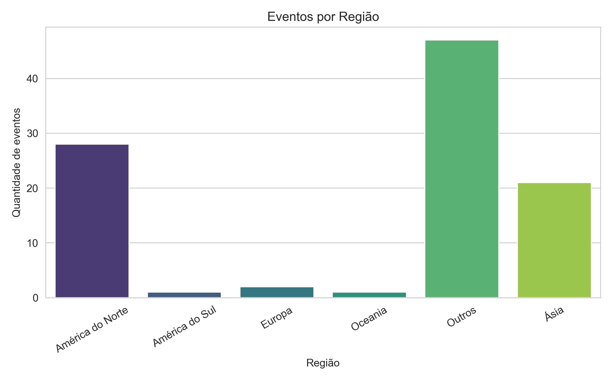
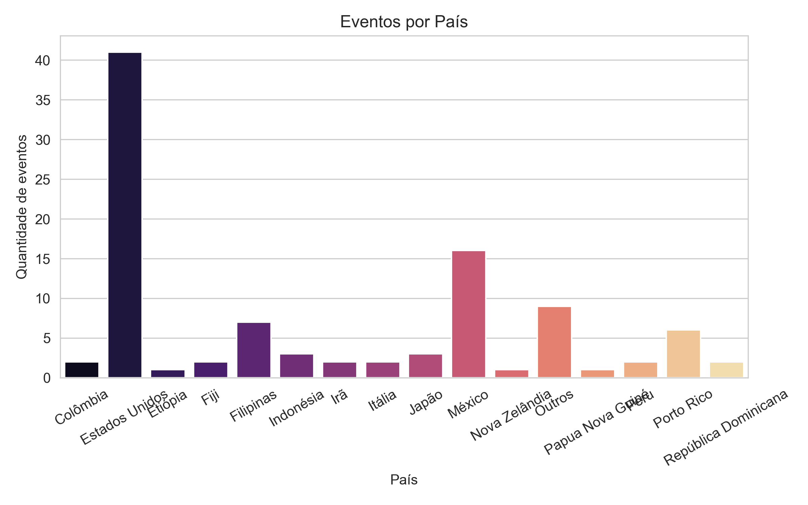
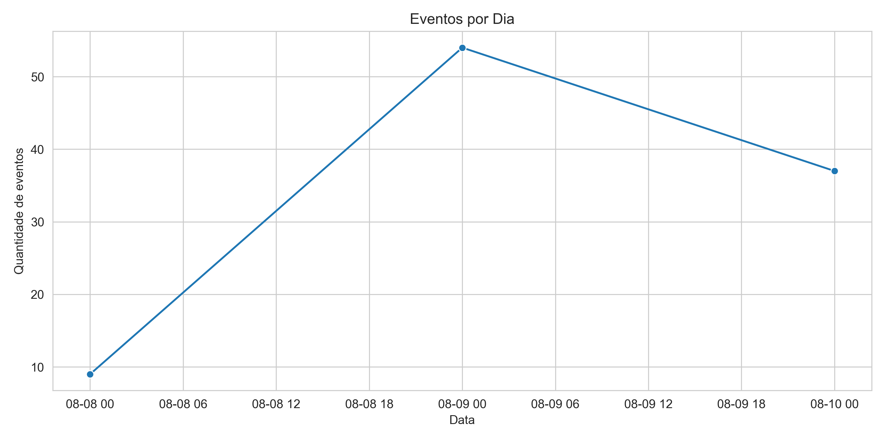
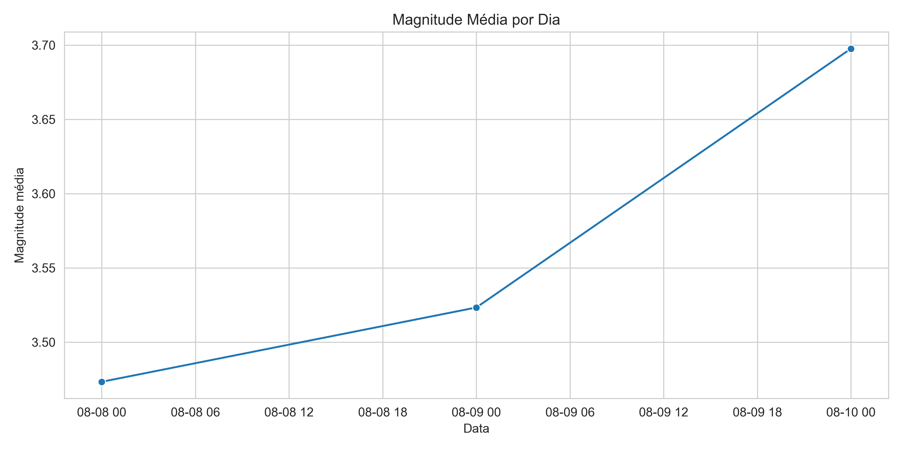
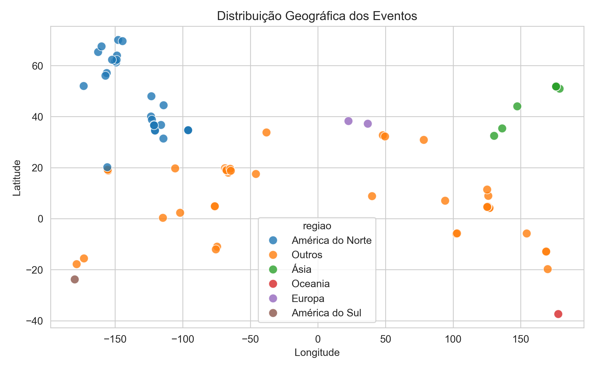

Gráficos da Análise de Terremotos
Visualizações geradas automaticamente pelo pipeline para explorar eventos sísmicos por região, país e tempo.
Eventos por Região

Eventos por País

Eventos por Dia

Magnitude Média por Dia

Distribuição Geográfica
